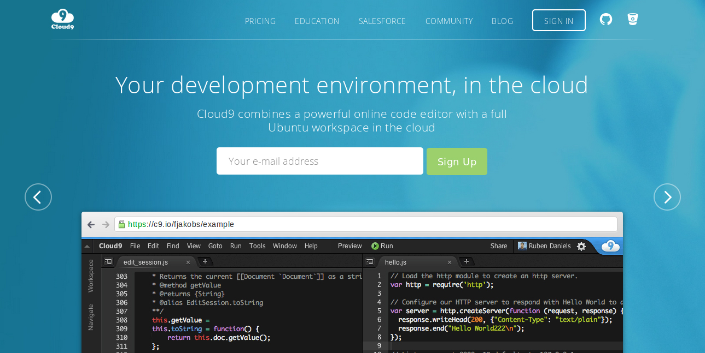
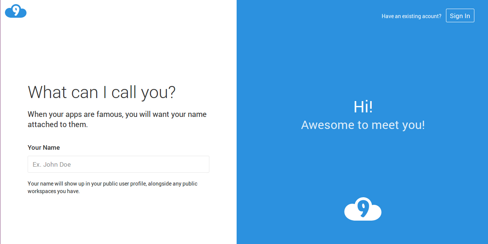
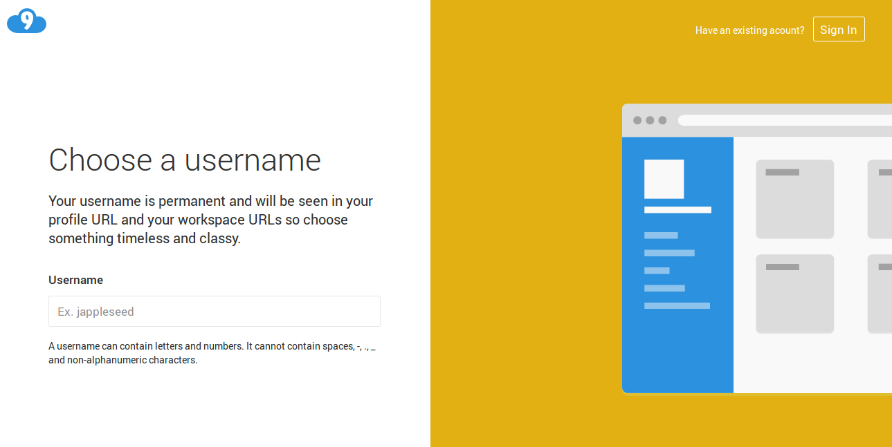
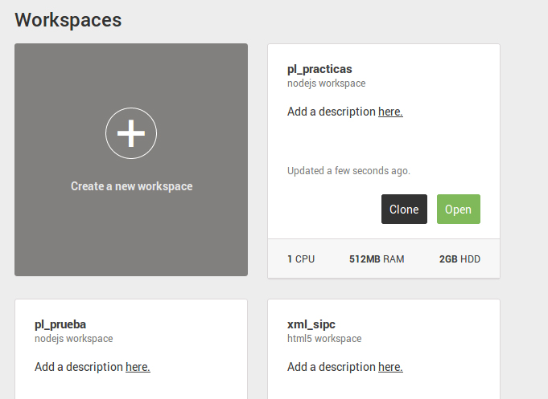
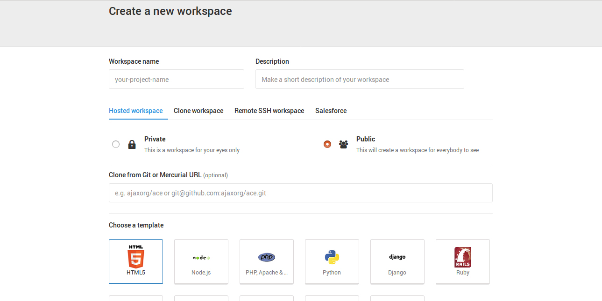
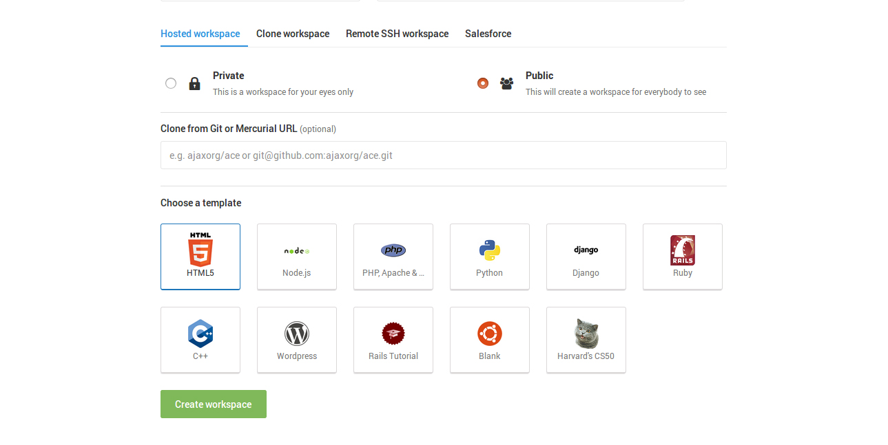
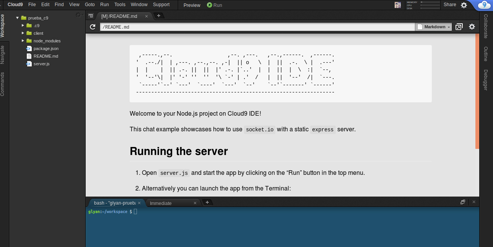

Cloud9
Cloud9 es un entorno de desarrollo que combina un potente editor de código online con un completo espacio de trabajo Ubuntu en la nube.
Creación de cuenta
Para crear una cuenta, primero accederemos a la página principal de Cloud9:
Una vez dentro, en el centro de la pantalla aparece un campo a rellenar con nuestro email y un botón a su lado de "Sign Up".

Introducimos nuestro e-mail y pulsamos el botón.
Tras hacerlo, la siguiente pantalla nos muestra un campo donde deberemos introducir el nombre que queremos que se muestre en nuestro perfil y en cualquier espacio de trabajo público que tengamos.

A continuación, se nos pedirá un nombre de usuario que aparecerá en las URLs de nuestro perfil y nuestros espacios de trabajo.

Se nos preguntará por qué tipo de desarrolladores somos y cómo vamos a usar Cloud9 para ajustar nuestra experiencia a nuestro perfil.
Confirmamos nuestros datos y por último, introducimos nuestros datos bancarios.
Creación de workspaces.
En la página principal de nuestro perfil, podremos crear nuevos espacios de trabajo o acceder a los espacios que ya tengamos creados.
Para crear uno nuevo, hacemos click en "Create a new workspace" en el centro de la pantalla.

Le damos un nombre al espacio y una descripción (opcional). Seleccionamos si queremos que sea público o privado.

Cloud9 permite escoger entre diferentes plantillas de acuerdo al lenguaje que vayamos a utilizar.

Una vez rellenado todo lo necesario, podemos proceder a crear el espacio, que se abrirá automáticamente:
